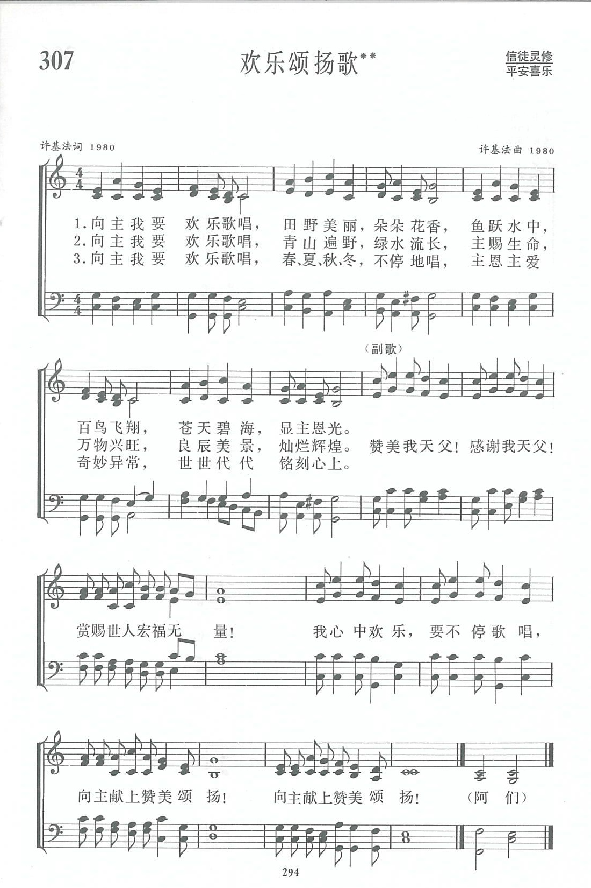

|
|
讚美詩(新編) 第307首《歡樂頌揚歌》 |
|
|
|
|
https://www.zanmeishige.com/tab/13980.html?songbook=1&index=307
 |
|
|
|
|

https://youtu.be/lbh4skxFaM4
第307首 欢乐颂扬歌** _许基法 Rejoice and sing unto my Lord
经文:“你们要靠主常常喜乐；我再说，你们要喜乐”(腓4：4)。
这是一首民歌风味较强的中国赞美诗。
1981年《新编》编辑部的同工集中在南京金陵协和神学院内办公，主日到莫愁路礼拜堂去参加崇拜。当时，许基法牧师是该堂的副主任牧师，兼唱诗班指挥。编辑部内史奇珪等三人和许基法是五十年代的同学，当他们了解到许基法曾经创作一首赞美诗的曲调，并曾在莫愁路礼拜堂内由唱诗班献唱，还用中国乐器作伴奏时，大家都鼓励他，把这首诗作为投稿。
原诗是借用一首现成的歌词，许基法接受了同工们的建议，重新写了歌词，这便是《欢乐颂扬歌》。
许基法生于1930年，父亲许士琦是江西九江的一位老牧师。他自幼受洗，1953年毕业于南京金陵协和神学院，1956年被按立为牧师。他曾担任南京青年会执行干事、山西路堂牧师等职。“文化大革命”后，l978年他返回教会工作。
许基法谈到，这首诗的曲调作于198O年南京教会复堂之时，是以中国民间欢庆节日的基调，唱出赞美神的欢乐歌声。
他回想神怎样带领他的儿女经过死荫的幽谷，又听了他们要求复堂的恳切祷告，现在大家得以进入圣殿去敬拜事奉神，确是如“我心中欢乐，要不停歌唱，向主献上赞美颂扬”这几句歌词所表达的无限欢乐。
副歌曲调中的切分音很有特点。它既能适当地配合中文的歌词，又具有强烈的节奏感。在这样的音乐气氛中，似乎可以看到许多穿着民族服装的基督徒，在击鼓歌唱赞美上帝。